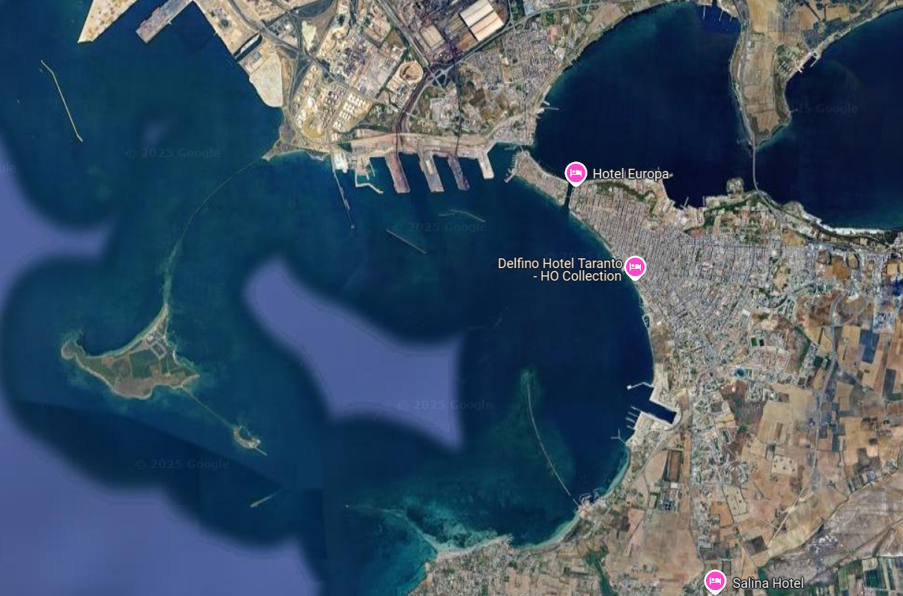
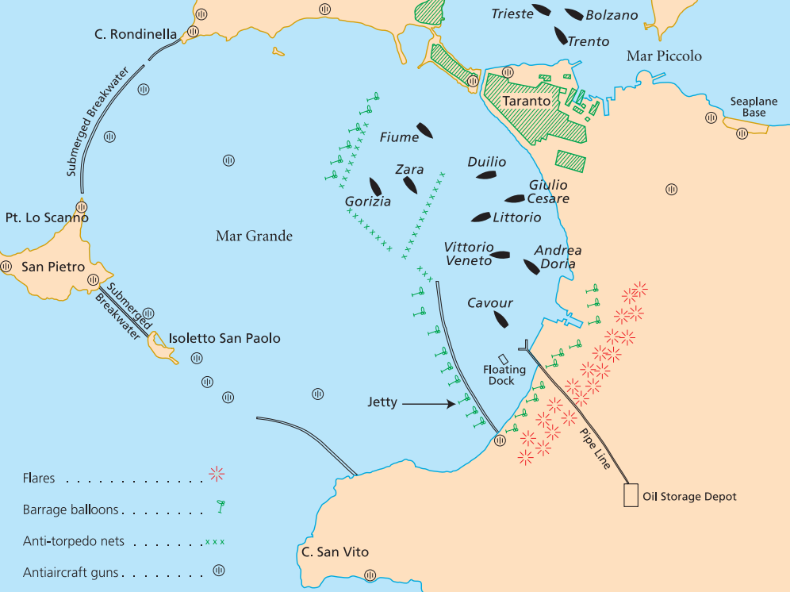
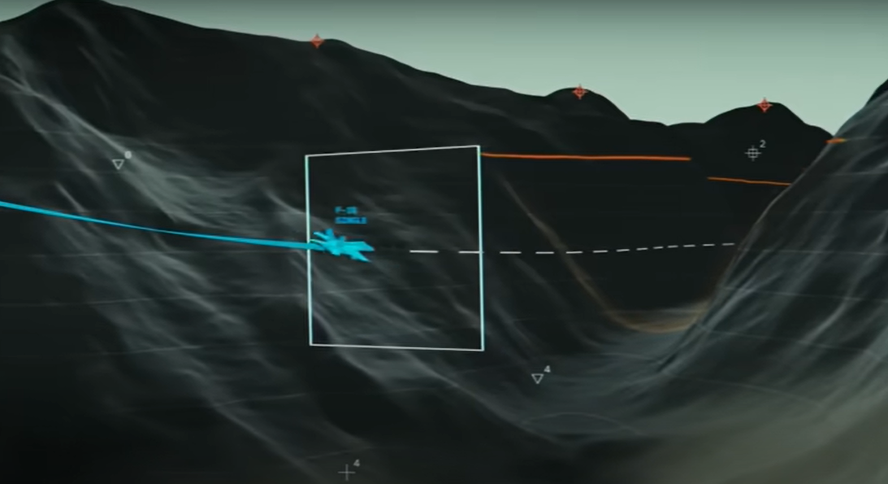
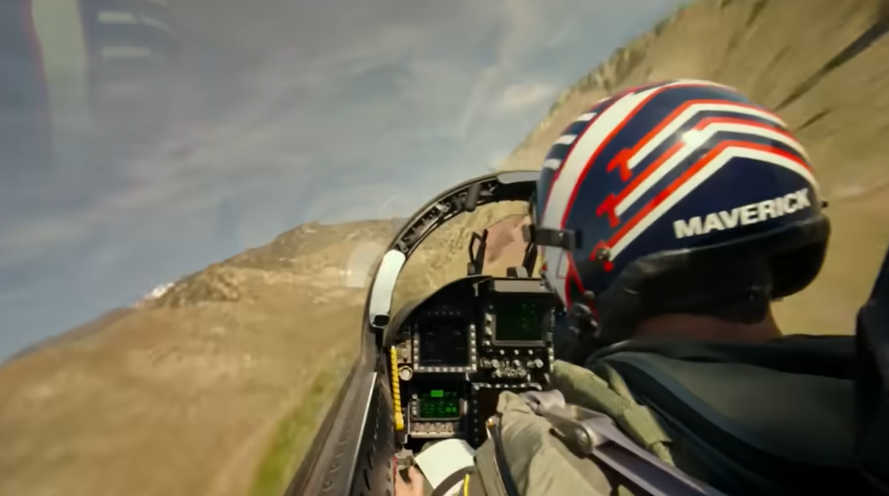
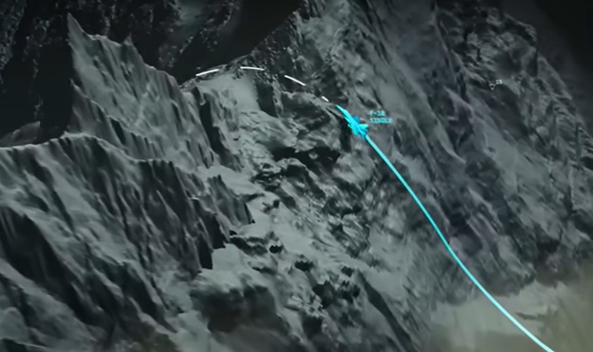
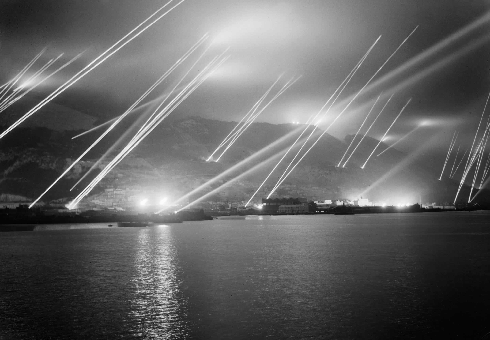
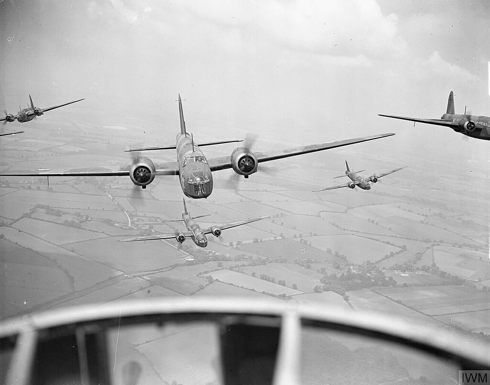
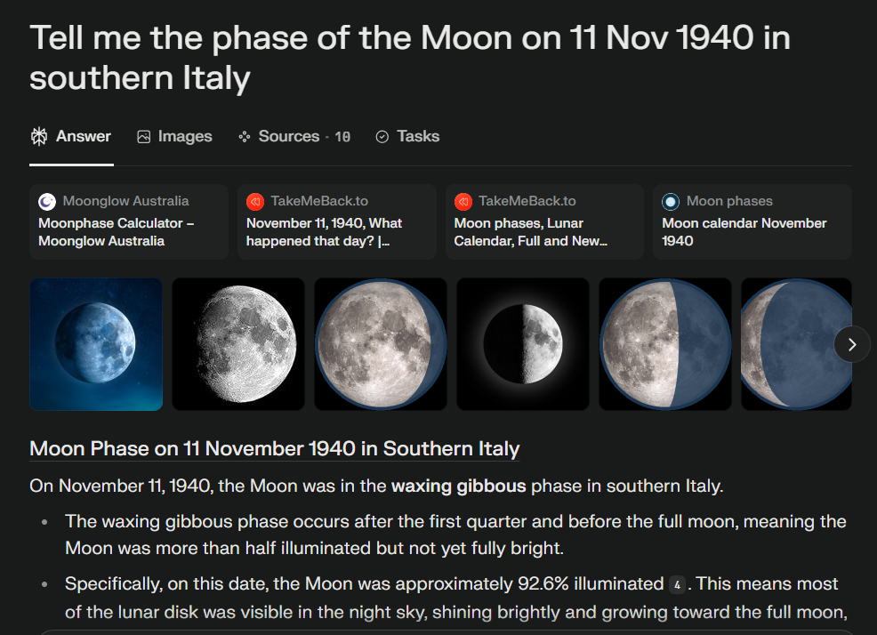

WW2 중 항모에서의 야간 작전 (17) - 파괴를 위한 천문학
게시: 2025-06-12T06:30:57+09:00
<타란토 상공의 매버릭> 타란토 항구에 설치된 방공기구들(barrage balloons)을 항공사진으로 확인한 영국해군은 이리저리 궁리해보다 이건 따로 방법이 없다고 결론을 내림. 그래서 조종사들 보고 부딪혀 죽으라고? 그건 아니고 살고 싶으면 알아서 피하라는 뜻. 이를 위해서 영국해군 지휘부가 조종사들에게 제공해줄 수 있는 것은 방공기구들이 항구내 어디에 설치되었는지를 상세하게 표시한 지도. 이게 가능했던 것은 역시나 말타섬 영국공군 Martin Maryland 정찰기들 덕분. 이들은 위험을 무릅쓰고 뻔질나게 타란토 항구를 드나들며 항공사진을 계속 찍어왔고, 덕분에 소드피쉬 조종사들은 방공기구들의 숫자와 위치가 변하는지를 수시로 정확하게 파악할 수 있었음. 원래 타란토 항구에는 총 90개의 방공기구가 크게 3열로 배치되어 있었으나, 11월 초의 폭풍 덕분에 상당수의 방공기구가 파손되었음. 엎친 데 덮친 격으로, 원래 이탈리아는 산업 기반이 다소 취약하여 수소가 부족하여 그렇게 파손된 방공기구들을 재빨리 다시 띄우지 못했음. 그래서 소드피쉬들이 실제 공습을 위해 출격하던 11월 11일 오전의 항공사진에는 불과 27개의 기구만 있었는데, 16개는 전함들의 서쪽과 북쪽에, 그리고 11개는 동쪽에 배치됨.

(현재의 타란토 항구의 모습. 타란토 항구는 외항과 내항으로 구성되어 있는데, 외항은 서쪽의 열린 바다와 인공 방파제로 분리되어 있고, 그 동쪽으로는 자연 형성된 작은 만이 내항을 이루고 있음.)

(1940년 11월 11일 당시 타란토 항구의 이탈리아 전함 6척과 어뢰 방어망, 방공기구, 그리고 대공포 등의 배치도. 전함들 위쪽의 Gorizia, Fiume, Zara는 순양함들.) 이렇게 최신 항공사진을 가지고 있었으므로, 운명의 11월 11일 항모 일러스트리어스에서 이함하는 소드피쉬 조종사들은 모두 이 27개의 기구가 항구의 어디어디에 배치되었는지 완벽하게 파악. 이 조종사들은 어둠 속에서 눈에 보이지 않는 강철 케이블들을 피해 어느 경로로 전함들에게 접근하고 어디쯤에서 급선회해야 할지 다 외워고 그에 따라 훈련. 영화 탑건 매버릭에서의 훈련 장면을 떠올리면 됨. 그걸 정확하게 외우는 것은 그야말로 목숨이 달린 문제였으므로 아마 그 조종사들은 학교 다닐 때 화학시험 대비하여 주기율표 외울 때보다 훨씬 더 열심히 그 위치를 외웠을 것.
  
(매버릭은 항법장치와 컴퓨터, Head Up Display의 도움이라도 받았으나 소드피쉬의 조종사들은 그냥 머리 속으로 외운 대로 가야 했음) <빛은 없어도 문제, 있어도 문제> 여기서 작은 문제가 있었음. 진짜 아무 불빛이 없는 어둠 속이라면 타란토 항구의 지형지물이 하나도 안 보일 것이므로 자신의 현재 위치와 방공기구의 위치를 전혀 파악할 수가 없음. 그러므로 목표물인 전함도 찾고 방공기구의 위치를 짐작할 수 있는 항구의 지형지물도 찾을 겸 낙하산을 매단 조형탄을 투하해야 했음. 그래서 선두에 선 소드피쉬는 어뢰 대신 마그네슘 조명탄을 탑재. 그것까지는 좋은데, 이탈리아군이 대공포를 조준하기 위해 들이댈 대형 탐조등의 불빛이 문제였음. 뇌격기인 소드피쉬들은 어뢰 투하를 위해 낮게 날아들 것인데, 탐조등들이 저공 저속으로 날아드는 소드피쉬들을 비추면 그 강렬한 탐조등빛에 조종사들이 눈이 멀어 앞을 못 보게될 것이 뻔했음. 이걸 어떻게든 막아야 했음. 어떻게?

(이 사진은 1942년, 야간 공습에 대비하여 훈련 중인 지브랄타의 탐조등들) 처음에 영국해군이 내놓은 방안은 또 말타섬의 영국공군 힘을 빌리자는 것. 즉, 이번에는 소드피쉬들이 타란토에 진입하기 약간 먼저 웰링턴 폭격기들을 고공으로 타란토 상공에 날려보내자는 것. 그러면 탐조등들은 고고도의 웰링턴 폭격기들을 비추느라 고개를 쳐들 것이니, 그렇게 탐조등 불빛이 위를 향한 사이 소드피쉬들이 저공으로 침투한다는 계획. 그러나 이건 말타의 영국공군 폭격기들에게 부당한 위험전가를 하는 셈. 게다가 소속도 다르고 비행 성능 자체가 다른 쌍발 공군 폭격기들과 소드피쉬들이 1~2분 차이로 타란토 항구에 돌입한다는 것은 매우 어려운 일. 대낮에도 힘든데 하물며 캄캄한 암흑 속에서?

(쌍발 중거리 폭격기였던 Vickers Wellington. 폭장량은 최대 2톤. 참고로 단발 단거리 함재 폭격기였던 Fairey Swordfish의 최대 폭장량은 760kg. 저런 쌍발 폭격기가 실을 수 있는 폭탄의 1/3 정도를 싣고도 그 짧은 비행갑판에서 이함이 가능하다니 소드피쉬는 정말 대단한 항공기인 셈.) 결국 영국해군이 채택한 것은 출격하는 소드피쉬 중 일부는 어뢰 대신 폭탄을 탑재하고 고공으로 침투하여 급강하 폭격기 역할을 하여 탐조등을 유인하라는 것. 복엽기인 소드피쉬가 급강하 폭격을 할 수 있나? 놀랍게도 쌉가능. 애초에 소드피쉬는 개발 때부터 설계 요구사항에 급강하 폭격이 들어있었음. 이는 소드피쉬에 대해 구매의사를 밝혔던 그리스 공군의 요구 조건이었음. 문제는 이렇게 고려할 사항들이 많아지다 보니 어뢰를 날릴 소드피쉬들 숫자가 점점 줄어든다는 것. 원래 30대의 소드피쉬가 15대씩 2개 편대로 나누어 돌격하는 것이었으므로 총 30방의 어뢰를 6척의 전함에 날릴 수 있었으나, 그 중 12대는 폭탄(그 중 또 1대는 폭탄과 함께 조명탄)으로 무장하게 되어 18방의 어뢰만 쏠 수 있게 되었음. 그런데 10월 중순경 항모 격납고에서 사고로 인한 화재가 발생하는 등 비전투 손실이 꽤 발생하여 몇 기의 소드피쉬들이 상실됨. 그래서 결국 11월 11일 밤에 출격한 21대 중 어뢰를 장착한 것은 고작 11대 뿐. 전함 6척에 어뢰 11방이라... 참고로 비슷한 상황이었던 다카르 항구에 정박한 전함 리셜리외 공격에는 총 6발의 어뢰가 발사되었고 그 중 명중한 것은 딱 1발 뿐. 다카르에서는 이미 새벽놀이 충분히 밝게 비추는 상황이었고 방공기구도 없었으며 대공포도 타란토보다 훨씬 적었는데도 그러했음. 과연 이 공격 성공할 수 있을까? <사람을 죽이기 위해서 천문학도 필요> 공격이 성공하기 위해서는 일단 조종사들이 살아서 타란토 상공에 뛰어들 수 있어야 했고, 느린 소드피쉬를 몰고 그러기 위해서는 깜깜한 밤에 뛰어들어야 했음. 그런데 조명탄을 투하할 거라고 해도, 일단 뭐가 보여야 여기가 타란토인지 소렌토인지 망망대해인지 구별을 할 수 있을 것이고 그래야 조명탄도 투하할 수 있는 것. 그래서 이 작전, 즉 Operation Judgement (심판 작전)이 언제 수행될 것인지는 제독님 마음대로가 아니라 달이 언제 가장 알맞게 뜰 것인지에 따라 결정되었음. 일단 둥근 보름달은 아니더라도, 충분히 밝지 않은 초승달이나 그믐달은 절대 피해야 했고, 최소한 상현달과 하현달 사이는 되어야 했음. 타란토 항구의 지형상 먼저 소드피쉬의 돌격은 반드시 서쪽으로부터 시작되어야 했고, 달빛을 등진 전함들의 실루엣이 조종사들의 눈에 뜨이기 위해서는 달이 동쪽 하늘에 낮게 뜬 상태에서 돌입해야 했음. 그래서 해군은 물론 공군 작전에도 천문학이 꼭 필요한 것. 또 느려도 너무 느린 소드피쉬의 짧은 항속 거리 때문에, 항모 일러스트리어스는 적항 타란토에서 매우 위험할 정도로 가까운 거리인 270km 근처까지 접근해서 소드피쉬를 날려야 했음. 그러자면 일러스트리어스도 충분히 어두워진 다음에 타란토 쪽으로 출발해야 했음. 그러니 달이 너무 일찍 떠서도 안 되고 늦은 한밤중에서야 동쪽 하늘에 떠야 함. 게다가 몇 시간 뒤 돌아올 소드피쉬를 착함시킨 뒤 항모가 안전거리 밖으로 도망칠 때까지 해가 떠서는 안 되었음. 그렇게 알맞은 시간대와 달의 위치 등을 따지다 보니 작전에 알맞은 날짜와 시간대가 몇 개 안 됨. 그래서 정해진 것이 원래는 10월 21일. 그러나 위에서 언급한 일러스트리어스에서의 사고로 인한 화재 때문에 이 때의 작전은 취소. 그래서 제일 빠른 시간대로 다시 정한 것이 11월 11일. 이때는 보름달이 되기 3일 전.

(이 블로그를 쓰기 위해 Perflexity를 자주 쓰는 편. ChatGPT에도 똑같이 물어봐서 교차 검증했음.)